← Volver a los casos · Hoja de ruta
Guía paso a paso: Laboratorio en la Plataforma de Asesores Empresariales
Esta guía te acompaña, paso a paso, para armar un caso de asesoría empresarial en la Plataforma de Asesores (https://asesor.plataformajt.com) con el expediente de visita asignado a tu equipo. Siguiendo este orden construirás la solicitud, la ficha, el registro de visita, las evidencias fotográficas, el diagnóstico, el plan de trabajo, el kit de medición, el documento de implementación y el cierre listo para la revisión de tu supervisora. **Cómo se trabaja en equipo:** cada grupo recibe una hoja con **dos usuarios y sus claves** (Piloto 1 y Piloto 2). El **Piloto 1** trabaja los casos 1 y 2; el **Piloto 2**, los casos 3 y 4, cada uno en su propio dispositivo y al mismo tiempo. Las demás personas del grupo ayudan a su piloto con roles que rotan en cada caso: **Lector** (lee la entrevista y la descripción de cada foto), **Analista** (propone qué marcar SI, NO o No aplica) y **Verificador** (revisa lo escrito antes de pulsar Guardar). Cada piloto termina sus dos casos en unas 2 horas; el cierre toma unos 20 minutos más.
Qué usa cada caso
| Empresa | Estrategia | Herramientas |
|---|---|---|
| Taller de Soldadura Hermanos Núñez | Gestión de la Seguridad y la Salud en el Trabajo | Fotos con IA (sugerir hallazgo) Diagnóstico SST Planner (plan de trabajo) Kit Matriz de riesgos Entregable: Política de SST |
| Almacén de Repuestos AutoExpress | Implementación Técnica de las 5S en Empresas | Diagnóstico 5S Fotos (evidencia antes) Planner Kit Priorización Entregable: Estructura de comité 5S |
| Colmado La Bendición | Transformación Digital en las MIPYMES | Diagnóstico de transformación digital Fotos Encuesta de satisfacción (enlace público) Planner Kit de ahorro de tiempo Entregable: soluciones digitales |
| Panadería Pan de Casa | Mejora y Estandarización del Servicio al Cliente en la Empresa | Diagnóstico de servicio al cliente Fotos Encuesta de satisfacción Planner Kit NPS Entregable: Guion y protocolo de atención |
1Entra a la Plataforma con el usuario de tu grupo
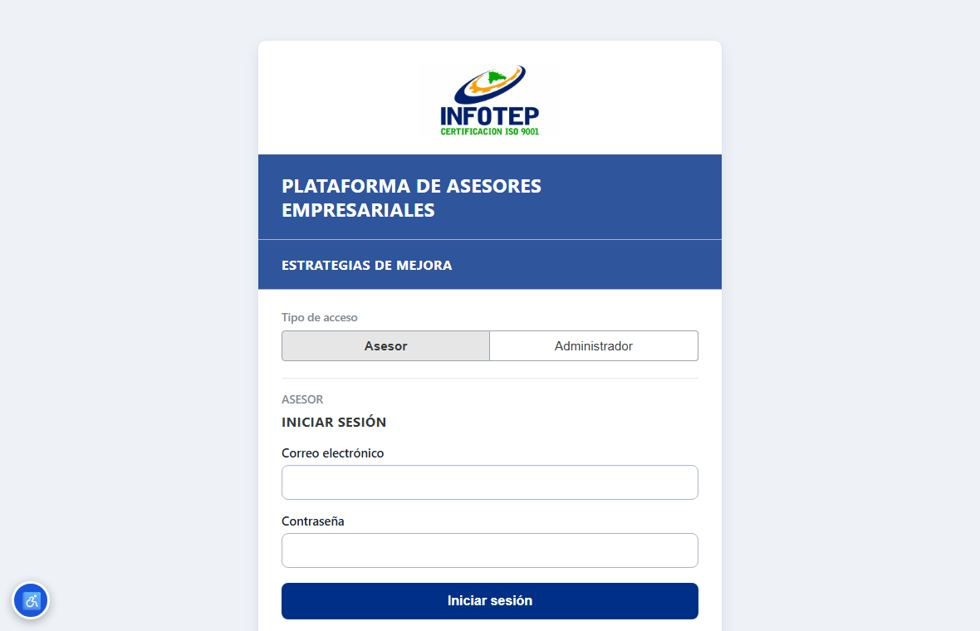
- Tu facilitador te entrega una hoja con dos usuarios (correo) y sus claves, uno para el Piloto 1 y otro para el Piloto 2. Cada piloto usa el suyo.
- Entra en asesor.plataformajt.com, escribe el usuario y la clave de tu hoja y pulsa «Iniciar sesión». No necesitas crear cuenta: no uses el botón «Crear cuenta».
- Anota en tu hoja el número de tu equipo: lo escribirás al final del nombre de cada caso, por ejemplo « - Equipo 2».
- Comprueba que ves el «Panel de indicadores» y el menú azul a la izquierda.
2Ubícate en el panel de indicadores y abre tus casos
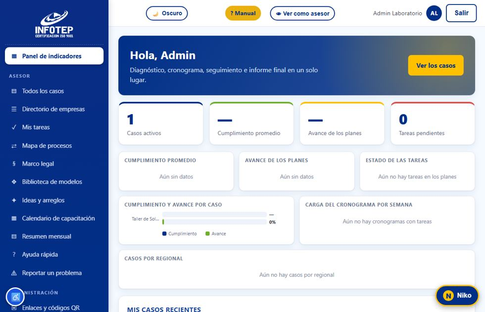
- Observa las tarjetas del «Panel de indicadores» («Casos activos», «Cumplimiento promedio», «Avance de los planes» y «Tareas pendientes»).
- Identifica en la barra superior el botón «? Manual» (ayuda paso a paso de la pantalla actual) y en la esquina inferior derecha el botón flotante «Niko» (asistente de la plataforma).
- Pulsa el botón amarillo «Ir a mis casos» (o «Ver los casos» si apareces en vista general), o bien elige «Mis casos» en el menú lateral izquierdo.
3Crea el caso y completa la solicitud de servicio
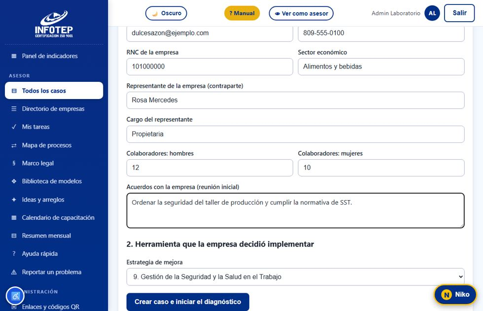
- Desplázate hasta la sección «Nuevo caso» y ubica «1. Solicitud de servicio».
- En «Empresa solicitante» escribe el nombre de la empresa de tu expediente. El nombre del caso DEBE terminar exactamente en " - Equipo N" (reemplazando N por el número de tu equipo, por ejemplo "Nombre de la Empresa - Equipo 1"), porque así se identifica y se califica automáticamente tu trabajo.
- Completa con los datos del expediente los campos «Vía de recepción de la solicitud», «Fecha de la solicitud», «Dirección de la empresa (calle, número y sector)», «Sector económico», «Representante de la empresa (contraparte)», «Cargo del representante», «Colaboradores: hombres» y «Colaboradores: mujeres».
- Escribe en «Acuerdos con la empresa (reunión inicial)» el compromiso inicial según lo conversado en la entrevista del expediente.
- En «2. Herramienta que la empresa decidió implementar», abre «Estrategia de mejora» y selecciona exactamente la estrategia asignada a tu caso.
- Pulsa «Crear caso e iniciar el diagnóstico».
- Importante: el nombre del caso y la estrategia NO se pueden cambiar después. Antes de pulsar el botón, verifica que el nombre termine exactamente en « - Equipo N» y que la estrategia sea la de tu expediente.
4Recorre la mesa de trabajo y el flujo del caso
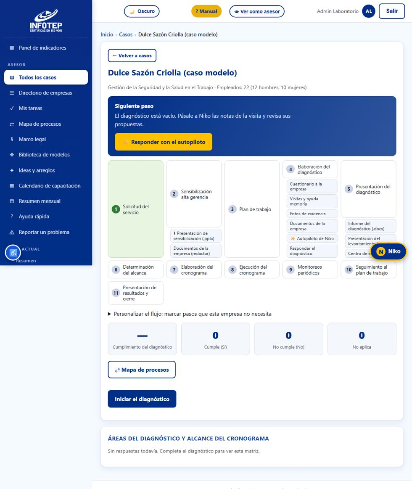
- Desde cualquier pantalla del caso, pulsa «Resumen» en el menú lateral bajo «Caso actual» (o el nombre de tu empresa en la ruta superior) para ver la mesa de trabajo.
- Lee el recuadro azul «Siguiente paso»: te indica en todo momento cuál es la acción recomendada que más hace avanzar el caso.
- Observa el mapa numerado del 1 al 11 («Solicitud del servicio» hasta «Presentación de resultados y cierre»): cada tarjeta se pinta de verde cuando completas ese paso.
- Usa las subtarjetas dentro del paso 4 («Elaboración del diagnóstico») o el menú lateral «Caso actual» para ir en orden a «Ficha y objetivos», «Ruta de visitas», «Fotos y hallazgos», «Diagnóstico», «Plan de trabajo», «Documentos», «Redactor con Niko» y «Entregas».
5Completa la ficha de la empresa y define objetivo y metas
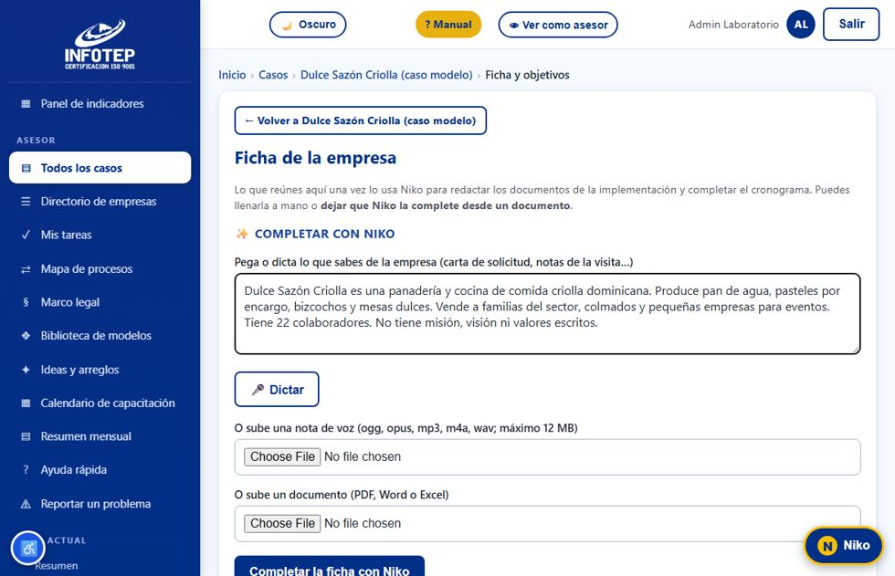
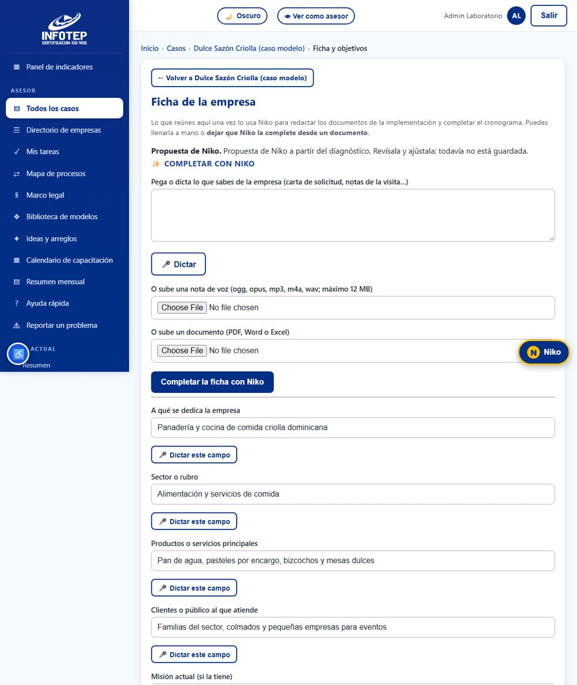
- En la mesa del caso pulsa «Solicitud del servicio» (paso 1) o elige «Ficha y objetivos» en el menú lateral «Caso actual».
- En «Completar con Niko», pega o dicta (con el botón «Dictar») la descripción de la empresa y los datos de la entrevista de tu expediente, o sube una nota de voz o documento (PDF, Word o Excel).
- Pulsa «Completar la ficha con Niko» y espera su propuesta: la IA puede tardar hasta 1 o 2 minutos; si avisa que no pudo procesarlo, reintenta una vez y si vuelve a fallar llena los campos a mano.
- Revisa y corrige cada campo propuesto por Niko («A qué se dedica la empresa», «Sector o rubro», «Productos o servicios principales», «Notas de la visita y lo que pidió la empresa» y los demás datos), porque la IA solo propone y nada queda guardado todavía.
- Completa «Objetivo general de la implementación» y «Metas medibles (una por línea)» (luego del diagnóstico también podrás apoyarte en «Sugerir objetivo y metas desde el diagnóstico»).
- Baja hasta el final del formulario y pulsa «Guardar la ficha».
- Escribe el «Objetivo general» con una oración completa (mínimo 30 letras) y las metas una por línea. Baja hasta el final y pulsa «Guardar la ficha». Si pulsas «Sugerir objetivo y metas» sin haber guardado, la pantalla se recarga y pierdes lo escrito: guarda primero.
6Registra la visita inicial en la Ruta de visitas
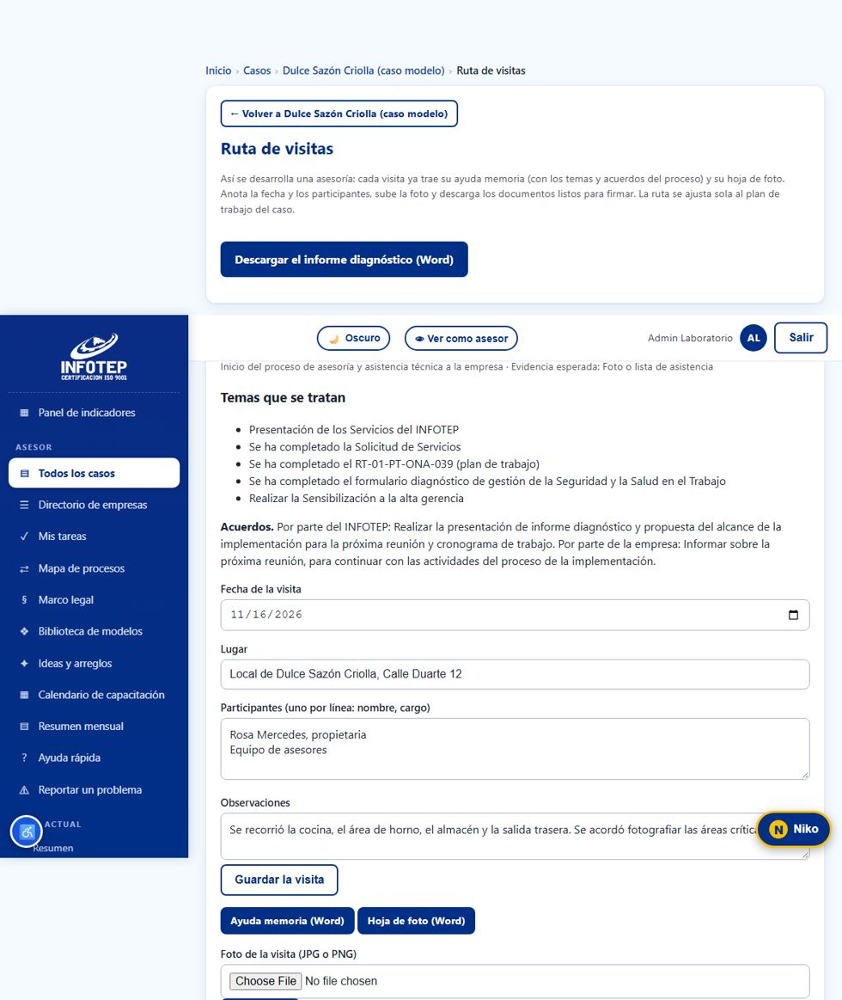
- En el menú lateral «Caso actual» pulsa «Ruta de visitas» (o en el paso 4 de la mesa elige «Visitas y ayuda memoria»).
- Ubica la tarjeta de «Visita 1» y revisa los «Temas que se tratan» y los «Acuerdos» propuestos por la plataforma.
- Completa «Fecha de la visita», «Lugar» (nombre y ubicación de la empresa), «Participantes (uno por línea: nombre, cargo)» incluyendo al dueño o contraparte y a tu equipo, y anota en «Observaciones» un resumen breve de la entrevista.
- Pulsa «Guardar la visita».
- Si deseas evidencia de reunión en esta pantalla, puedes subir una imagen en «Foto de la visita (JPG o PNG)» con «Subir la foto» y probar la descarga de «Ayuda memoria (Word)» u «Hoja de foto (Word)».
- Llena obligatoriamente la «Fecha de la visita»: sin fecha la visita queda «Pendiente» y no cuenta como realizada.
7Sube las fotos del expediente y confirma cada hallazgo
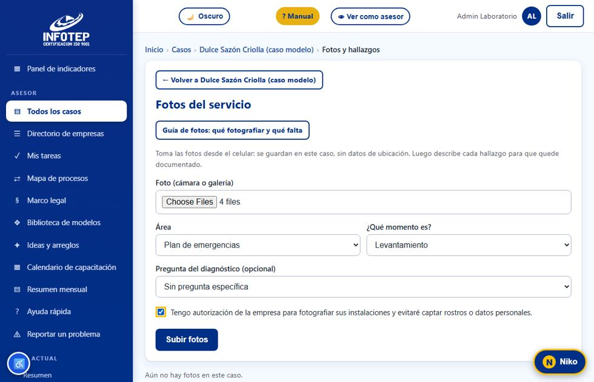
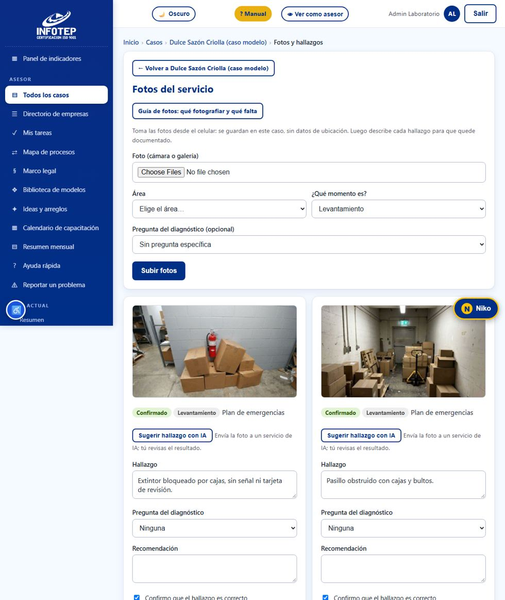
- Sube las fotos desde una computadora o laptop, no desde el celular: en muchos teléfonos el botón abre solo la cámara y no deja escoger de la galería. Descarga antes las fotos del expediente en la computadora (clic derecho en la imagen > «Guardar imagen como»).
- Entra a «Fotos y hallazgos» en el menú lateral (o «Fotos de evidencia» en el paso 4 de la mesa) y consulta si lo deseas «Guía de fotos: qué fotografiar y qué falta».
- En «Foto (cámara o galería)» selecciona las fotos de tu expediente de visita, elige obligatoriamente el «Área» correspondiente (o «General (sin área concreta)») y deja «¿Qué momento es?» en «Levantamiento».
- Marca la casilla obligatoria «Tengo autorización de la empresa para fotografiar sus instalaciones y evitaré captar rostros o datos personales.» y pulsa «Subir fotos».
- Para cada foto lee, en tu expediente, el texto «Lo que se observa». Con eso y con la entrevista del dueño decide qué problema o qué buena práctica muestra, y escríbelo con tus palabras en «Hallazgo».
- Revisa con criterio de asesor y corrige «Hallazgo», «Pregunta del diagnóstico» y «Recomendación» según lo que se ve en la foto (el hallazgo lo escribes tú).
- Marca la casilla «Confirmo que el hallazgo es correcto» y pulsa «Guardar» en cada foto hasta que todas muestren la etiqueta «Confirmado».
- No pulses el botón «Sugerir hallazgo con IA»: esa función está en mantenimiento y, si se pulsa varias veces, apaga por un momento la IA de toda la clase (Autopiloto, Redactor, ficha). El hallazgo lo escribes tú, con al menos 15 letras.
- Puedes subir las fotos de una en una escogiendo su «Área», o todas juntas con «General (sin área concreta)». El área de una foto no se puede cambiar después.
8Usa el Autopiloto con Niko (solo para Seguridad y Salud en el Trabajo)
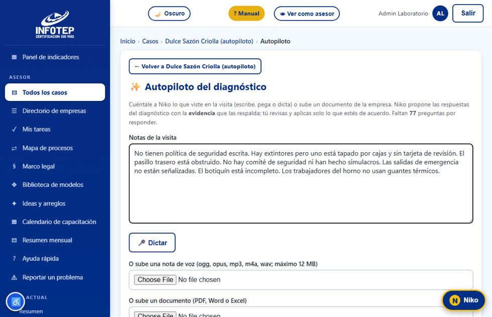
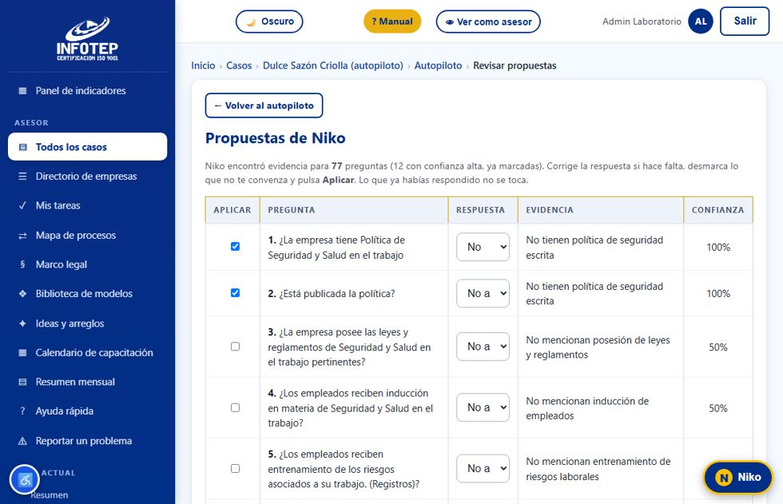
- En este laboratorio el Autopiloto se usa solo en el caso de «Gestión de la Seguridad y la Salud en el Trabajo». Aunque el menú lo muestre en otras estrategias, en los demás casos responde el diagnóstico criterio por criterio.
- Si tu caso corresponde a «Gestión de la Seguridad y la Salud en el Trabajo», pulsa «Responder con el autopiloto» en la mesa del caso (o «Autopiloto» en el menú lateral). Si tu equipo trabaja 5S, Transformación Digital o Servicio al Cliente, salta directamente al paso 9 porque el Autopiloto solo existe para Seguridad y Salud en el Trabajo.
- En «Notas de la visita» pega o escribe lo que observaste en las fotos y lo que contó el dueño en la entrevista (también puedes usar «Dictar», subir una nota de voz o un documento PDF, Word o Excel).
- Pulsa «Analizar con Niko» y espera a que procese tus notas (puede tardar hasta 1 o 2 minutos; si indica que no pudo generar propuestas, reintenta una vez y si vuelve a fallar pasa directo al paso 9 para responder a mano).
- En la pantalla «Propuestas de Niko», revisa cada fila: lee la «Pregunta», la «Respuesta» sugerida («Sí», «No» o «No aplica»), la «Evidencia» y la «Confianza».
- Corrige cualquier respuesta que no coincida con tu expediente, marca o desmarca la casilla «Aplicar» según tu criterio profesional y pulsa «Aplicar las marcadas al diagnóstico».
9Responde y guarda el diagnóstico criterio por criterio
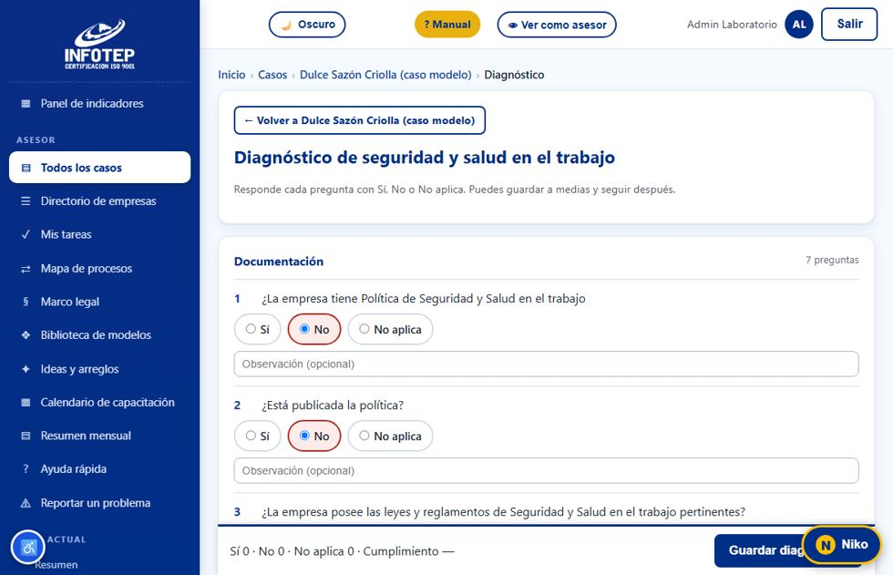
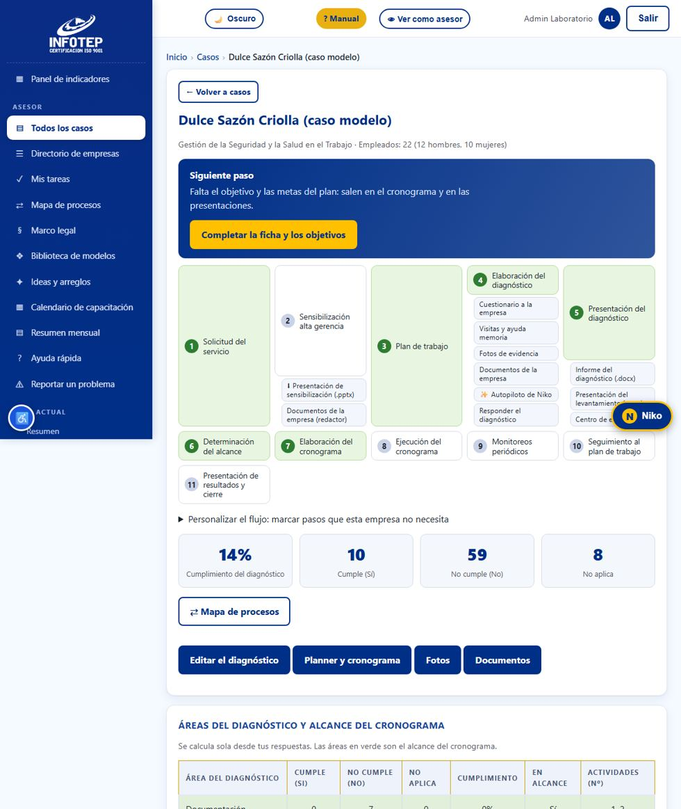
- Abre «Diagnóstico» en el menú lateral (o pulsa «Iniciar el diagnóstico» / «Iniciar el análisis» en la mesa del caso).
- Despliega cada sección o área haciendo clic en su encabezado para ver sus preguntas o criterios.
- Marca «Sí», «No» o «No aplica» en cada criterio basándote en las evidencias de las fotos y en la entrevista al dueño (en estrategias distintas a Seguridad y Salud en el Trabajo todo el diagnóstico se responde así, criterio por criterio).
- Agrega una nota breve en «Observación (opcional)» cuando quieras dejar constancia de lo que observaste en el expediente.
- Verifica en la barra inferior el conteo en vivo de respuestas y el porcentaje de cumplimiento.
- Pulsa «Guardar diagnóstico» (o «Guardar análisis» según tu estrategia); puedes guardar a medias y volver después si lo necesitas.
- Responde al menos el 70 % de los criterios del diagnóstico (no solo los que ves en las fotos): usa SI, NO o No aplica según la entrevista del dueño. Si algún criterio dice solo «ELIMINAR», déjalo sin responder o márcalo «No aplica». En SST verás el porcentaje en vivo; en las demás estrategias, aparece en la mesa al guardar.
10Genera y ajusta el plan de trabajo en el Planner
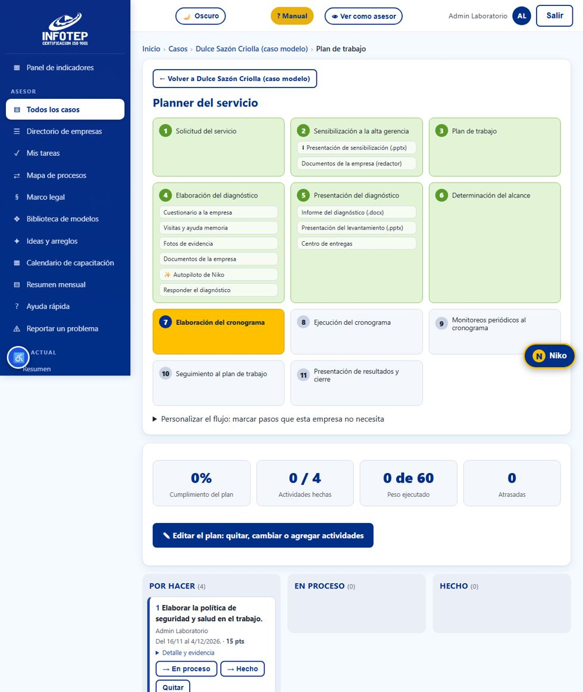
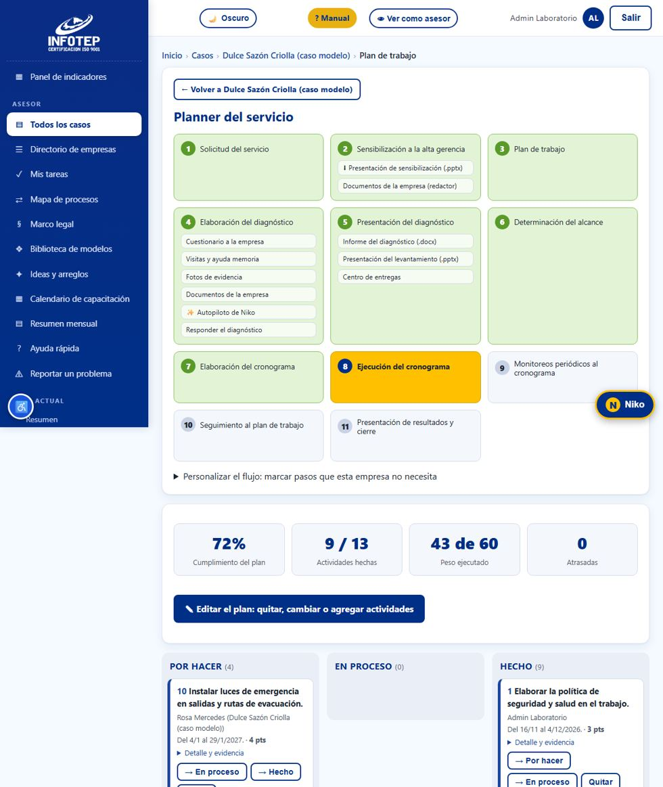
- Si respondiste todo el diagnóstico, la plataforma ya generó el plan automáticamente y no verás el botón «Generar el plan de trabajo»: es normal, sigue con las actividades que aparecen.
- Pulsa «Plan de trabajo» en el menú lateral (o el paso 3 «Plan de trabajo» en la mesa del caso) para abrir el «Planner del servicio».
- En la sección «Plan de trabajo», pulsa «Generar el plan de trabajo desde el diagnóstico» para que la plataforma proponga actividades a partir de tus criterios marcados en «No».
- Desplázate hasta «Editar el cronograma» (o pulsa «Editar el plan: quitar, cambiar o agregar actividades») para definir el alcance realista de tu asesoría.
- Ajusta «El cronograma empieza el (lunes)», «Duración del proceso (meses completos...)», el nombre, el responsable y los meses «Desde» y «Hasta» de cada actividad; marca «Quitar» en las que no entren en el alcance o agrega una actividad en la última fila.
- Verifica el recuadro de suma de pesos: las actividades activas deben sumar exactamente 60 puntos (si no cuadra, pulsa «Repartir los 60 puntos automáticamente (proporcional a los pesos escritos)»).
- Pulsa «Guardar cronograma» y, si corresponde al avance del caso, mueve las tarjetas entre columnas en el tablero del Planner.
- Revisa que cada problema que encontraste en las fotos tenga una actividad en el plan. Si falta alguno, pulsa «Editar el plan» y agrega una actividad en la sección que corresponda, con su responsable y sus semanas. Así tu plan atiende todos los hallazgos.
- Obligatorio: pasa al menos 2 actividades a «En proceso» o «Hecho» con los botones de cada tarjeta, y comprueba que todas tengan responsable y semanas.
11Descarga y llena el kit de medición en Excel
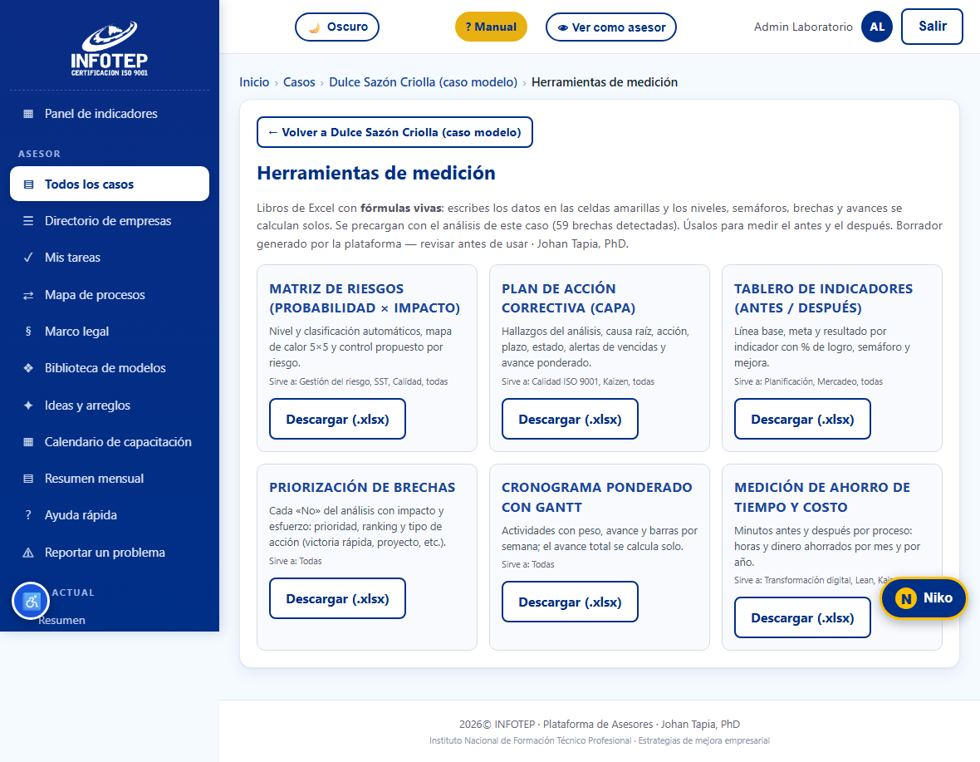
- Para entrar a «Herramientas de medición»: pulsa «Resumen» en el menú lateral y comprueba que la dirección termine en /casos/N (sin /planner). En SST agrega /herramientas al final; en las otras estrategias usa la tarjeta «Herramientas de medición».
- En el resumen del caso busca la tarjeta «Herramientas de medición» y pulsa «Abrir herramientas» (en la estrategia de Seguridad y Salud en el Trabajo, agrega /herramientas al final de la dirección de tu caso en el navegador para abrir esta misma pantalla).
- Identifica el kit asignado a tu caso en la tabla de esta guía («Matriz de riesgos (probabilidad × impacto)», «Priorización de brechas», «Medición de ahorro de tiempo y costo» o «Medición de satisfacción (NPS)») y pulsa «Descargar (.xlsx)».
- Abre el archivo descargado en Excel o LibreOffice Calc: verás que algunos kits ya traen precargadas las brechas («No») de tu diagnóstico.
- Llena únicamente las celdas amarillas con los datos y estimaciones coherentes de tu caso; no borres las columnas con fórmulas porque los niveles, rankings, semáforos, ahorros o el NPS se calculan solos.
- Guarda el archivo Excel en tu computadora con un nombre claro para subirlo al caso en el paso 13.
- Si la tabla de tu caso incluye «Encuesta de satisfacción», abre además «Encuestas» en el menú lateral, elige el «Tipo de encuesta» y pulsa «Crear la encuesta» para generar su enlace público y código QR.
- En Colmado y Panadería, al crear la encuesta cambia el desplegable «Tipo de encuesta» a «Encuesta de satisfacción del cliente»: viene marcada la de clima laboral por defecto.
12Redacta el documento de implementación con Niko
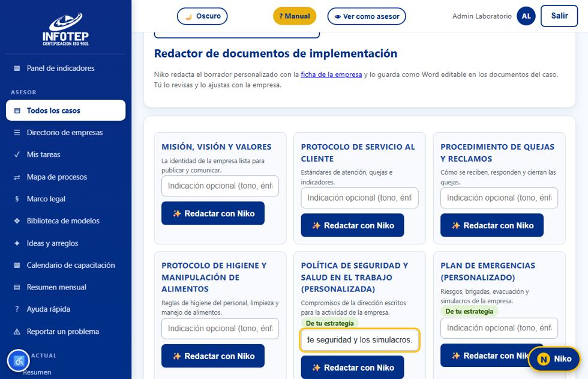
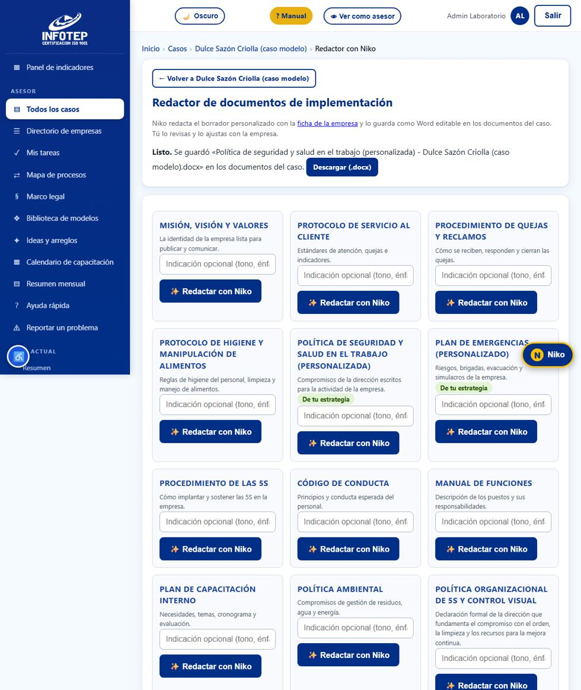
- En tu expediente (sección 3) está el nombre del documento que debes redactar. Búscalo en la lista; si no lo encuentras, usa el buscador del navegador (Ctrl+F) con las primeras palabras.
- En la lista aparecen documentos de todas las estrategias. El tuyo lleva la etiqueta verde «De tu estrategia»; también puedes buscarlo con Ctrl+F escribiendo las primeras palabras del nombre.
- Abre «Redactor con Niko» en el menú lateral «Caso actual» (o pulsa «Documentos de la empresa (redactor)» en el paso 2 de la mesa).
- Ubica el documento que corresponde a tu caso (los de tu metodología llevan la etiqueta verde «De tu estrategia»; también puedes consultar plantillas adicionales en «Entregables» del menú lateral si tu caso requiere un formato complementario).
- En el campo «Indicación opcional (tono, énfasis…)» escribe alguna instrucción útil para personalizarlo según la entrevista con el dueño (por ejemplo, lenguaje sencillo para el personal del taller o del negocio).
- Pulsa «Redactar con Niko» y espera sin cerrar la pestaña: la generación con IA puede tardar hasta 1 o 2 minutos.
- Cuando aparezca el aviso «Listo. Se guardó ... en los documentos del caso», pulsa «Descargar (.docx)» para abrir el Word, revisar todo el texto y verificar que corresponda a la empresa (si la IA falló y generó una plantilla base con espacios por completar, reintenta una vez o completa el Word a mano y súbelo en Documentos).
- Recuerda que el Redactor guarda automáticamente el archivo Word dentro del caso: no necesitas volver a subirlo salvo que lo edites fuera y quieras adjuntar tu versión ajustada.
13Sube el kit de medición y revisa los Documentos del caso
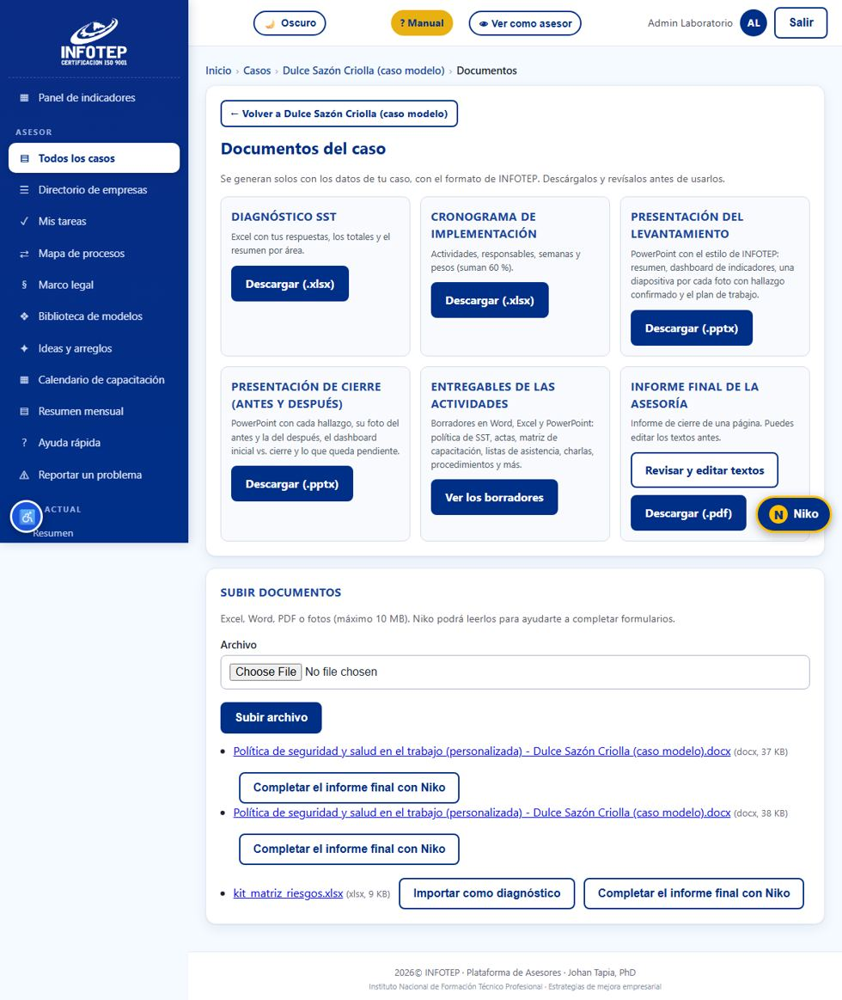
- Pulsa «Documentos» en el menú lateral «Caso actual» (o «Documentos de la empresa» en el paso 4 de la mesa).
- Baja hasta la tarjeta «Subir documentos» (acepta Excel, Word, PDF o fotos de hasta 10 MB).
- En «Archivo», selecciona el libro de Excel (.xlsx) del kit de medición que llenaste en el paso 11 y pulsa «Subir archivo».
- Verifica en la lista inferior que aparezcan tanto el kit de medición que acabas de subir como el archivo Word guardado por el Redactor con Niko.
- Revisa las tarjetas superiores de «Documentos del caso» («Diagnóstico SST», «Cronograma de implementación», «Presentación del levantamiento», «Presentación de cierre (antes y después)» y «Entregables de las actividades») y descarga los que necesites revisar.
14Redacta y guarda el Informe final de la asesoría
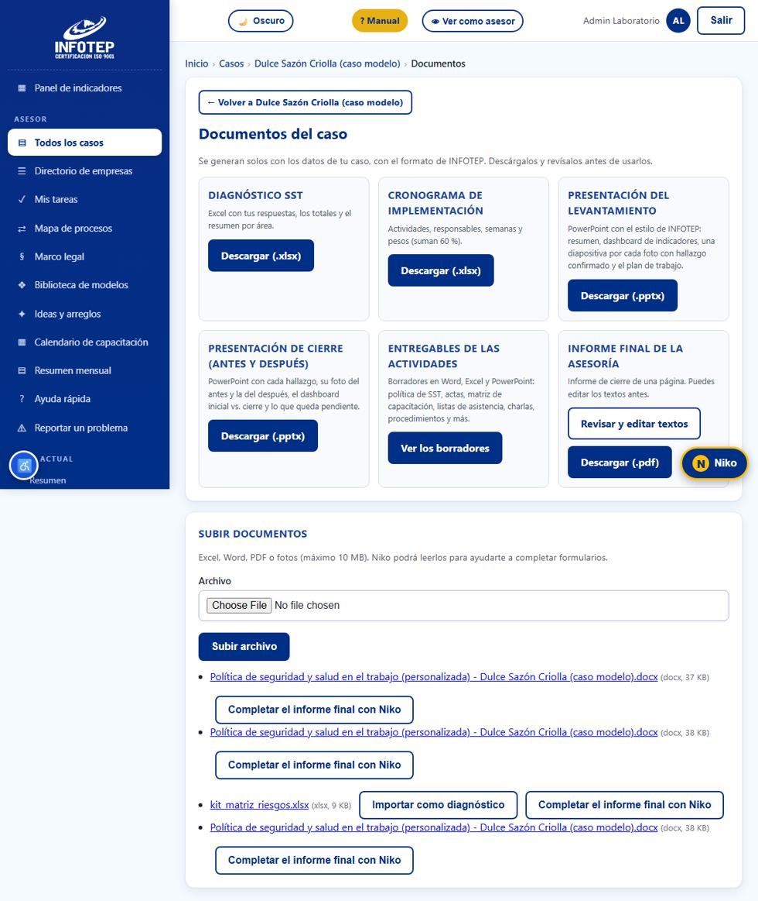
- Desde «Documentos del caso», ubica la tarjeta «Informe final de la asesoría» y pulsa «Revisar y editar textos».
- Si deseas apoyo de la IA, escribe o dicta (con «Dictar») en «Lo que se logró» el resumen de la intervención y pulsa «Completar con Niko» (puede tardar hasta 1 o 2 minutos; si avisa que no pudo hacerlo, reintenta una vez y si falla redacta los tres recuadros a mano).
- Revisa cuidadosamente lo que propuso Niko o redacta directamente los campos «Mejoras logradas», «Actividades pendientes (si aplica)» y «Recomendaciones del asesor».
- Cuida el límite de espacio que muestra cada campo (por ejemplo, «usa 2 de 4 renglones»): si excedes los renglones disponibles, acorta las frases para que el informe quepa en una sola página.
- Verifica «Fecha del informe (dd/mm/aaaa)» en formato día/mes/año y pulsa «Guardar».
- De vuelta en «Documentos del caso», pulsa «Descargar (.pdf)» en «Informe final de la asesoría» para comprobar que el PDF se vea limpio y completo.
- Escribe con tus palabras las mejoras y las recomendaciones (en total, más de 60 letras).
15Verifica todo en el Centro de entregas y prepara la revisión
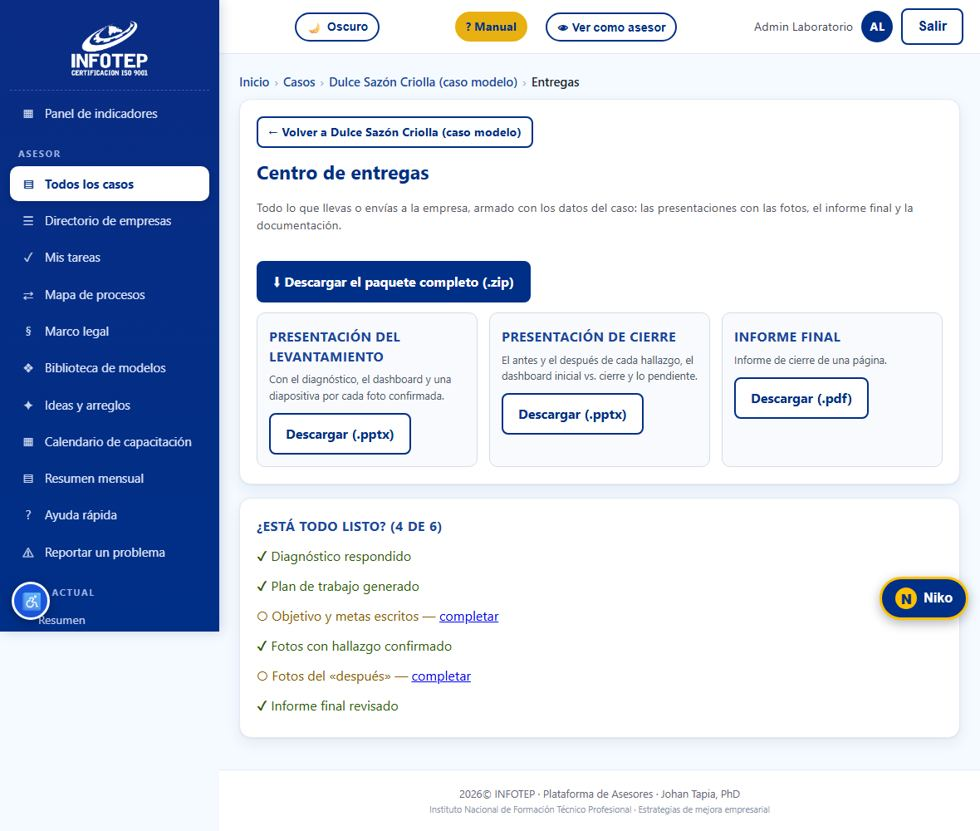
- En el menú lateral «Caso actual» pulsa «Entregas» (o en la mesa del caso elige «Centro de entregas» en el paso 5 o paso 11).
- Revisa la tarjeta «¿Está todo listo?» al final de la pantalla: cada punto completado muestra una marca de listo y los pendientes muestran el enlace «completar» para ir directo a resolverlos.
- Asegúrate de que estén completos el diagnóstico, la ficha con objetivo y metas, el plan de trabajo, las fotos con hallazgo confirmado, el kit subido en Documentos, el documento redactado y el informe final revisado (en un laboratorio de levantamiento inicial, «Fotos del después» solo aplica cuando se registran mejoras posteriores).
- Comprueba una última vez que el título de tu caso termine en " - Equipo N" y repasa la lista de cotejo al final de esta guía antes de avisar a la supervisora.
- Pulsa «Descargar el paquete completo (.zip)» para obtener en una sola carpeta comprimida todas las presentaciones, el informe final y los documentos de tu expediente como respaldo del equipo.
- Ojo: la tarjeta «¿Está todo listo?» de esta pantalla solo revisa algunas cosas y en 5S, Transformación Digital y Servicio al cliente puede decir que todo está listo aunque falte trabajo. Confía en la lista de cotejo de abajo, no en esa tarjeta.
16Arma tu carpeta de entregables y súbela al Proyecto final en Moodle
- Por cada caso, reúne en tu computadora tres archivos: (1) el kit de Excel que llenaste y subiste; (2) el Word que hizo el Redactor: en «Documentos» del caso pulsa el nombre del archivo para descargarlo; (3) el «Informe del diagnóstico (.docx)»: está en la mesa del caso, paso 4 o 5 «Presentación del diagnóstico».
- No descargues el «paquete .zip» del Centro de entregas: lo que se entrega son estos tres archivos de cada caso.
- Descarga la Portada de la carpeta de entregables (la encuentras en la página de los casos) y escribe el número del equipo y el nombre completo de todas las personas.
- Crea una carpeta llamada «Equipo N - Entregables», con una subcarpeta por caso («1 Soldadura», «2 Almacén», «3 Colmado», «4 Panadería») y la portada afuera. Comprímela en un solo archivo .zip.
- Llama a tu supervisora: revisará la lista de cotejo de tu equipo y firmará la portada.
- Una sola persona del equipo entra al curso en la plataforma virtual de INFOTEP: «Unidad V. Proyecto final y evaluación (cierre)» > «Proyecto final (grupal)» > «Hacer un envío», arrastra el .zip y pulsa «Guardar cambios». La calificación se aplica a todo el equipo.
Lista de cotejo final
Antes de llamar a tu supervisora, comprueba que tu carpeta de entregables está completa. Ella revisará y firmará cada punto:
- ☐ Caso creado con la estrategia correcta y nombre terminado exactamente en " - Equipo N" (con el número de tu equipo).
- ☐ Solicitud de servicio y Ficha de la empresa completas y guardadas, incluyendo cantidad de colaboradores, objetivo general y metas medibles.
- ☐ Visita 1 registrada en Ruta de visitas con fecha, lugar, participantes y observaciones (estado «Realizada»).
- ☐ Todas las fotos del expediente subidas con Área elegida, autorización marcada, hallazgo revisado y casilla «Confirmo que el hallazgo es correcto» guardada (etiqueta «Confirmado»).
- ☐ Diagnóstico (o Análisis) respondido y guardado con criterio de asesor a partir de las fotos y la entrevista (con Autopiloto + revisión en SST, o criterio por criterio en las demás estrategias).
- ☐ Plan de trabajo generado y cronograma guardado en el Planner con responsables, meses y suma de pesos exacta de 60 puntos.
- ☐ Kit de medición asignado al caso descargado en Excel, llenado en las celdas amarillas con fórmulas intactas y subido en «Documentos del caso» («Subir documentos»).
- ☐ Encuesta de satisfacción creada en «Encuestas» (cuando la tabla de tu caso la incluye).
- ☐ Documento de implementación redactado con Niko (o plantilla oficial revisada), verificado en Word y guardado dentro de «Documentos del caso».
- ☐ Informe final de la asesoría revisado, dentro del límite de renglones, guardado y comprobado en PDF.
- ☐ Verificación final realizada en «Centro de entregas» («¿Está todo listo?») y paquete completo (.zip) descargado como respaldo del equipo.
- ☐ Mínimos que se revisan: hallazgo de cada foto con 15 letras o más · objetivo con 30 letras o más · informe con 60 letras o más · diagnóstico respondido al 70 % o más · al menos 2 actividades en proceso o hechas.
- ☐ Carpeta «Equipo N - Entregables» comprimida, con portada firmada, subida al Proyecto final (grupal) de la Unidad V por una sola persona del equipo.
Plataforma de Asesores Empresariales · Desarrollado por Johan Tapia, PhD